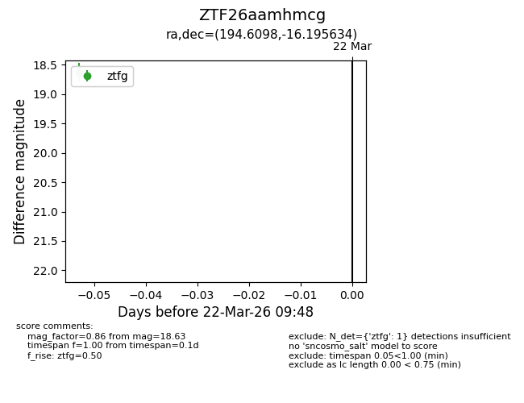
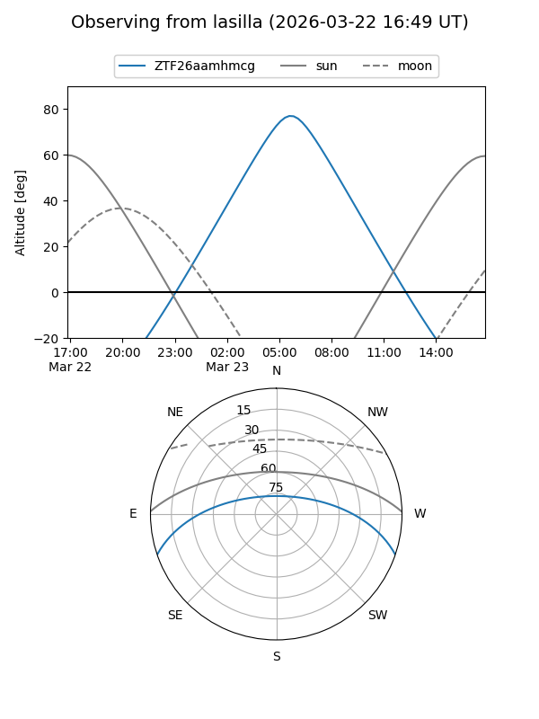
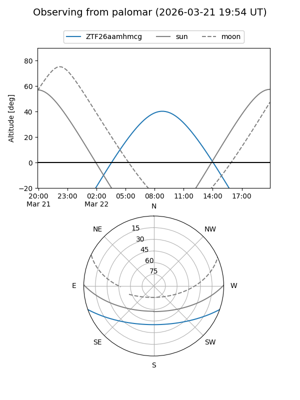

ZTF26aamhmcg
Target ZTF26aamhmcg at 2026-03-22 09:50
Aliases and brokers:
FINK: link
Lasair: link
ALeRCE: link
alt names
ZTF26aamhmcg (ztf,fink_ztf)
Coordinates:
equatorial (ra, dec) = 194.6098,-16.19563
equatorial (HMS+DMS) = 12:58:26.36,-16:11:44.28
galactic (l, b) = (305.3806,+46.64282)
Flags:
Photometry:
last ztfg=18.63
1 ztfg detections
Lightcurve

Visibility


Additional plots